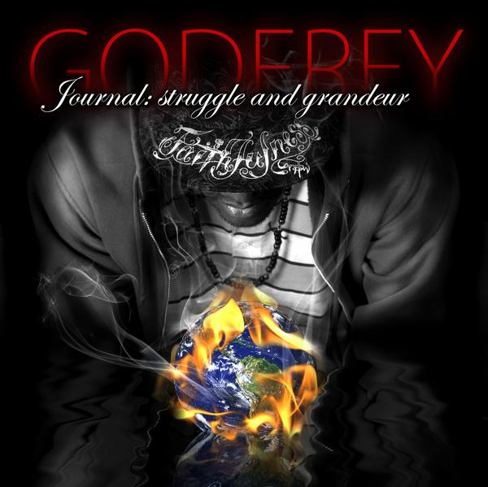

Godfrey's page: Songs and Lyrics by our own master

Visit myspace.com/godfreysjournal
Cancer
Deception in politics is cancer - Thinking that you got all the answers is cancer
Willful ignorance thats cancer - Ten year olds making fly kicks in them sweatshops cancer
Fifteen hours a day with hardly no pay, did i mention - disgusting working conditions thats cancer
Psychological manipulation - appealing to the senses through reality tv dramatization
The socio-political construction of race thats cancer - designed to hoard wealth, while everybody else self-destructs
Plus - people thinking that they "black" when they could be Oulof - I swear thats wack
It's easy to see, if you strip a person of their identity, they implode mentality - its cancer
Stratification and inequality caused by capitalism and greed cancer
Lights, camera, action - media controlled by elite factions - cancer
Portraying images of minorities as criminals cancer - determining what's proper and good
They say if you "hood", or look anything like you "hood" then you cancer - cancer
Denying a man a job and meat to eat 'cause of the way that he speaks thats weak and it's cancer
All religions from catholicism to christianity to islam cancer
Through tradition, people are regulated by what God never mandated and its cancer
The Creator wants companionship with mankind - ferocity, cancer - hypocrisy, cancer
Lack of sympathy and love for the next man that be cancer - its killing us, cancer - its killing us cancer
Bias in standardized tests, that be cancer - teachers treating little kids like animals
Because they don't reflect middle class values - and they might be a little dirty
But that doesn't make 'em unworthy of getting the same education as rich little Ernie
You got the rich kids picking on the poor - the poor lashing back like "take my wrath" its cancer
Indifference to, or attacking YHWH's perfect sacrifice thats cancer
Commercial hip-hop and its cliches - get the guap, get the cheese, copp the drop, cock the glock
Now squeeze - Where the freaks? Make em hot, watch em drop, to they knees, slob a cock
Then its two fingers peace - I swear these record labels got dudes on their knees, and its killing music
Its all cancer
Candid Parlance
Fresh out the booth - feeling like a new man
Promoting myself like Jackie Moon fams
Catch me on campus - how you do ma'am?
Gurls hot like they just got two tans
Are you swell, mademoiselle? - You got my heart screaming something like Patti Labelle
I just went blind, would you be my brail? Nah, I'm just kidding
Here's my website, check me - let me know if you're diggin
The lyrics and production - my heart and soul over horns and percussion
Hit me up, let's have some discussion
About real issues - It amazes me how life can be a maze you see?
I'm trynna get it in with the people - I aint got time to float around like your boi is so super regal
I'm tired of hearing 'bout being "fly", fabricated lies, pontificated by these guys
Claiming that their thrones' in the skies - Little kids like costumes - these dudes in disguise
I must have missed dress-rehearsal - Nowadays people look a little TOO commercial
Come walk with a gentleman, I'll show you just how gentle I am
Marinate
I grab my pen and my paper, transcend to another place - i'll see you later
I'm meditating on historic events, I'm meditating on them ancient scripts
Levitating like an angel but my name aint Chris, on my shoulder is no dandruff but a couple of chips
Chardonnay in my glass - i take a couple of sips
Instrumental on blast, snares a couple of kicks -- they so sick
I just wanna chill with no drama - where's Maury Povich - or Ricky Lake
I need a break for my mental sake, see me take, a couple of hours and just marinate
Separate myself from people who be actin' fake
Me and solitude have a date- and she told me do not be late
I'm showing up with flowers, chill mode activate
Can I live, Can I breathe
A little bit of solitude is all I need
Couple deep breaths and i'm at it again
My only true friends are my pad and my pen
It just so happens, i'm close to my pad and pen like Sam - and Frodo Baggins
See us relaxin and laughin - basking together, companions no matter the weather
I swear it's all passion when I'm passin my soul to my pad - I'm Steve Nashin
Deep incisions with my pen, creating artful curves
Transplant surgery as i place my heart in words, a lot more than nouns and verbs
I know it sounds absurd, but I would rather chill with you
Than clowns who be following the herd, who swallowing media's turds
Wallowing in ignorance, its sickenin and I'm sick of it - it's ridiculous and some know it
Others are the systems victims
That's the reason why my lyrics is meticulous I'm staying true and never fictitious
Repeat Chorus
(Ahhhh) Do you hear that? That's the sound of relief
As I dwell by myself far away from fake peeps
Around you they act one way - others come around it's another OK
I aint got time for this babe, I gotta burn rubber
Pedal to the metal - I gotta bury this, where's my shovel? It's my biz
To tell it like it is - I'm on my Aaron Neville
Seeking others on my level - Mentality so rebel as I revel at the thought of revolution
That won't be sparked by any man - Give me spins, I'll change the climate like a ceiling fan
True company - No chance of silly friends
It's depressing times, but pressing I'm trynna stay giddy like Hello Kitty fans
And lyrics stayin' blazin' cajun like a box of Zatarains